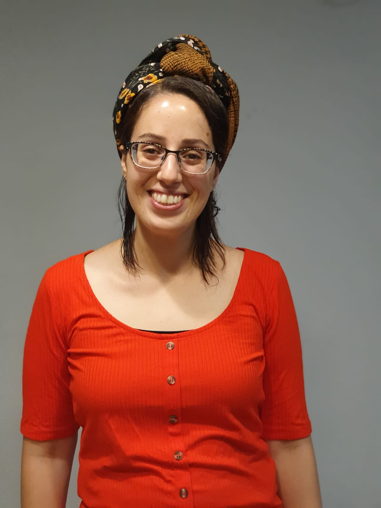

קצת על עצמי

שמי אודיה לאמי, בת 27 , נשואה ליואב ואמא לשני ילדים מתוקים ושובבים.
במהלך השנה וחצי האחרונות, עברתי שינוי. הקורונה הגיעה אלינו ועם כל הקושי ואי הודאות שאופפת אותה,
היא גרמה לי שהביאה להסתכלות אחרת על החיים והרצון לאתגר את עצמי ולצאת מאזור הנוחות
- התקדמתי במקום העבודה שלי לתפקיד QA
- הכנסתי את הבריאות והכושר לחלק משמעותי בחיי
- למדתי לשלב ולאזן בין שלושה דברים שחשובים לי בחיים - משפחה, בריאות ועבודה
המשפחה שלי
נולדתי וגדלתי בקרית אונו, הרביעית מבין ארבעה האחים. ממש הסוף של הסנדויץ'׳. ואם כבר סנדויץ׳- גדלתי עם לחמניה ביחד.
אבי היה אחראי על קו הפצה של לחמניות, ואני נהניתי מהשלל.
למדתי בבית הספר הממ״ד שבעיר, ולאחר מכן בתיכון הרא״ה ברמת גן.
המשכתי להתנדבות בעמותת ״קו לחיים״ סניף צפון במסגרת שנת השירות, שנה משמעותית שעברה מאוד מהר.
ואז התחתנתי. יש כאלו שאומרים ״מעט מוקדם״, ואכן היו תקופות מאתגרות, אבל את הפירות אני קוצרת היום.
המשפחה שלי נמצאת במרכז החיים- ירדן ואיתן, (3 ו-1.5 שנים בהתאמה), הקטנים אך שובבים, דואגים להזכיר לי שהלב נמצא במקום הנכון.
אני יכולה להקדיש את הזמן שלי אליהם, וליהנות מהרגעים הכי יפים שהם חווים, כל יום מחדש.
העבודה שלי
התחלתי לפני כ-8 שנים לעבוד בחברת אלעד פתרונות בתפקיד של HELP DESK לתוכנת קמיליון - תיק רפואי ממוחשב.
במסגרת התפקיד סיפקתי תמיכה אלפקטיבית ללקוחות החברה ותוך כדי למדתי את המערכת והמודולים המורכבים שבה.
ביצעתי בדיקות תהליכים בסביבות פרודקשיין לקוח ולאחר מכן שיחזור התקלות בסביבות דמה של החברה.
התמקצעתי בין היתר בבדיקות אינטגרציה , שפיות ופונקציונליות.
לאחר מספר שנים בחברה , התקדמתי למשרה יציבה בתור בודקת תוכנה ידנית.
הידע שצברתי בשנים הקודמות תורמות לי מאד במסגרת תפקידי כיום וכמו כן ההסתכלות על התוכנה היא שונה, מורחבת ויצירתית יותר.
בריאות וכושר
בשנה וחצי האחרונות הבנתי שמי שרוצה לשפר את הכושר הגופני- צריך להתאמן. לקח לי זמן להבין איזה סוג אימון הוא המתאים לי אבל הבנתי בסוף לאיזה תחום אני יותר אוהבת ומה עושה לי טוב. במהלך הזמן הזה הצטרפתי לקבוצה בפייסבוק שנקראת "אמא חוזרת לגינס " ושם הבנתי שגם חשוב לאכול נכון ומתאים. השילוב בין תזונה נכונה וספורט הוא חשוב מאוד. אם זה מעניין גם אתכם ממליצה לכם להכנס ולהתרשם בעצמכם באתר שלהם osot shiniui

אודיה לאמי
050-9081970
odoz15@gmail.com